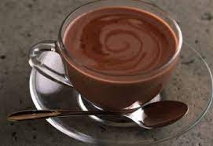
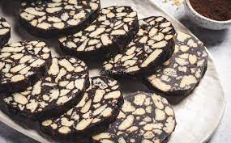

Turinys
Karšta kakava

Ingridientai
pienas : 500 mililitrų
kakavos pudra (be priemaišų): 1 valgomojo šaukšto
cukraus pudra : 1 valgomojo šaukšto
Alergenai
--
Recepto paruošimas
- Pirmiausia moliniame puodelyje šaukštu gerai išmaišykite vieną valgomąjį šaukštą kakavos su vienu
valgomuoju šaukštu cukraus.
- Pripilkite vieną valgomąjį šaukštą pieno ir labai gerai išmaišykite, iki kol gausite vientisą masę,
tepamo sūrio tirštumo.
- Tada pripilkite dar 100 mililitrų pieno. Dar kartą viską gerai išmaišykite, plūduriuojančius tirštos
kakavos gumuliukus šaukštu sutraiškykite į puodelio sienelę.
- Po to mišinį supilkite į nedidelį puodą, supilkite likusį pieną ir virš vidutiniškos liepsnos virinkite visą
laiką maišydami šaukštu. Reikia būti pasiruošus puodą nukelti nuo liepsnos, kai maždaug po 10
minučių virimo mišinys užvirs, tai yra pakils iki puodo kraštų
- Per smulkų sietelį karštą kakavą pilkite į du molinius puodelius
Tinginys su pienu

Ingridientai
sausainiai : 500 mililitrų
sviestas (be priemaišų): 1 valgomojo šaukšto
pienas : 1 valgomojo šaukšto
cukrus : 1 valgomojo šaukšto
kakava : 1 valgomojo šaukšto
vanilinis cukrus : 1 valgomojo šaukšto
druska : 1 valgomojo šaukšto
Alergenai
--
Recepto paruošimas
- Pirmiausia sausainius sutrupinkite į didelį dubenį.
- Tada nedideliame puode išlydykite sviestą ant vidutinės kaitros.
- Supilkite pieną, suberkite cukrų, kakavą, vanilinį cukrų bei druską. Maišykite, kol masė pradės virti.
- Virkite maždaug 3-4 minutes ant silpnos kaitros nuolatos maišydami. Masė per tą laiką šiek tiek
sutirštėja.
- Tuomet iš karto užpilkite ant sausainių ir gerai išmaišykite.
- Sausainių masę palikite šiek teik atvėsti.
- Kai sausainių masė šiek tiek atvės, ant stalviršio patieskite maistinę plėvelę ir sudėkite sausainių tešlą
bei suformuokite ritinį.
- Tuomet sausainius susukite į plėvelę, gerai užspauskite plėvelę, kad neliktų oro tarpelių, užsukite
ritinio galus ir dėkite į šaldytuvą stengti mažiausiai porai valandų arba dar geriau per visą naktį.
- Kai jau tinginys sustingsta, supjaustykite griežinėliais
Brownie

Ingridientai
70% juodas šokoladas: 100 gramų
sviestas(be priemaišų): 1 valgomojo šaukšto
sviestas: 62 gramų
cukrus: 75 gramų
rudas cukrus: 50 gramų
kiaušiniai: 1
miltai: 65 gramų
kakavos milteliai: 11 gramų
kepimo milteliai: 0,5 arbatinio šaukštelio
druska: žiupsnelio
Alergenai
--
Recepto paruošimas
- Pirmiausia įkaitinkite orkaitę iki 175 laipsnių temperatūros ir pasisveriame ingredientus. Nuo šių
sausainių gaminimo laiko labai priklausys jų tekstūra, rezultatas, tad reikėtų nesėdėti rankų sudėjus.
- Garų vonelėje išlydykite šokoladą su sviestu. Kol jie lydosi, į didelį dubenį muškite kiaušinį ir berkite
abiejų rūšių cukrų. Plakite dideliu galingumu apie 5 minutes.
- Atskirame dubenėlyje sumaišykite sausus ingredientus. Šokolado masė jau turi būti paruošta, tad jeigu
dar nepraėjo 5 plakimo minutės, tiesiog paliekame šokoladą šiek tiek pravėsti.
- Sumažiname plaktuvo galingumą ir po truputį pilame jau pravėsusią masę.
- Kai jau viskas patampa vientisa, pakeičiame kombaino antgalį, į skirtą tirštesnei tešlai (jeigu naudosite
įprastą plaktuvą, šį žingsnį tiesiog praleidžiame) ir plakdami labai lėtai, po truputį beriame sausų
ingredientų mišinį.
- Mūsų brownie sausainių tešla jau paruošta! Neišsigąstame, kad ji tikrai skystesnė nei įprastos
sausainių masės, bet tai būtent ta priežastis, kuri suteiks sausainiams tą labai gražų suskeldėjusį raštą ir
labai minkštą bei tąsų vidų.
- KTada į kepimo skardą, išklotą su kepimo popieriumi, dėkite po norimą kiekį tešlos. Aš dedu po vieną
arbatinį šaukštelį su nemenku kaupu, bet jūs galite kepti tiek didesnius, tiek mažesnius sausainius -
pagal savo norus ir pageidavimus.
- Dėkite į jau įkaitintą orkaitę ir kepkite apie 10-12 minučių.